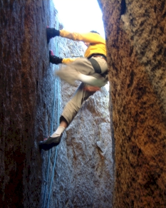
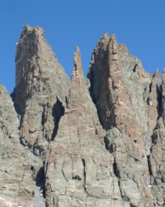
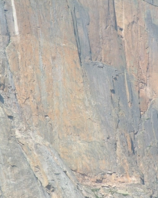
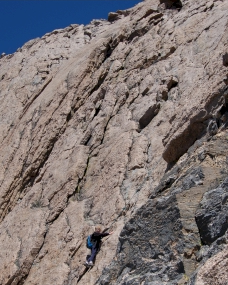
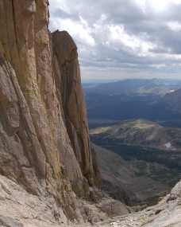
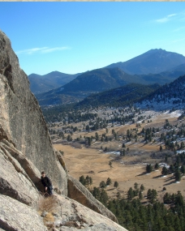

Let Cliff Hangers take you to places you have never been before. Our professionally trained guides get you there and teach you the sports of rock climbing, ice climbing, and extreme climbing that you may have only read about in adventure magazines. Our friendly climbing guides provide the fun in a safe and exciting environment for all levels of climbers. Even if you are new to the sport, we have tours and tour guides for you.
Our tours can be booked as standalone outings, or you can pair them with courses from our climbing school at a reduced cost.
Please view the list of tours below.
Eldorado Canyon

Eldorado Canyon is not actually in Rocky Mountain National Park, but if you 're willing to take a 60-minute drive to this awesome state park, we can provide some of the best climbing in Colorado.
Choose from beginner climbs to more advanced routes.
Eldorado offers climbs of 400 to 600 feet high on a solid rock wall.
All climbs are only a short distance from the parking lot.
No matter what your skill and experience, we'll tailor the Eldorado Canyon tour to fit you.
Difficulty Level
Beginner to expert, depending on climber
Time
Allow for one day
Physical Stress
Mild to extreme, depending upon climb
The Petit Grepon

Nestled in the middle of the Cathedral Spires, the Petit Grepon is one of Rocky Mountain National Park's most challenging and awesome climbs.
The summit of the peak is a mere ten- by thirty-foot perch, so don't plan on group photos from the top.
For those who are more interested in a less intimidating climb, we also offer tours up Sharkstooth, a nearby summit offering excellent views of the Petit Grepon.
Difficulty Level
Expert
Time
Full day
Physical Stress
Extreme
Longs Peak: The Diamond

The pinnacle of climbing in Rocky Mountain National Park, the Diamond starts at 13,100 feet and rises nearly 1000 vertical feet to the upper slopes of Longs Peak.
The left side of the Diamond offers several different routes, none easier than 5.10 (extreme difficulty).
The right half of the Diamond is primarily used by aid climbers.
Due to the strenuous nature of the Diamond, all participants will have to pass a physical examination and climbing evaluation.
Difficulty Level
Expert
Time
Two Days
Physical Stress
Extreme
Longs Peak: Kiener's Route

One of the most awesome climbs in the park, yet still very accessible to the beginning climber, Kiener's Route is a Cliff Hangers favorite. The route starts at Mills Glacier and proceeds up a 1000-foot couloir known as Lamb's Slide (ice axes and crampons required)
Moving off Lamb's Slide, you are led across Broadway, a narrow ledge varying in width from several feet to six inches.
The ledge overlooks a sheet of granite plunging down to Chasm Lake far below.
Proceeding up from Broadway, you will climb to the summit of Longs Peak following a route requiring climbing gear and climbing technique.
Kiener's is one of North America's classic climbs.
Difficulty Level
Beginner to moderate
Time
Allow for one day
Physical Stress
Moderate
Longs Peak: The North Face

The North Face route of Longs Peak is the perfect tour for the beginning climber who wants to reach the summit following a different route from the main trail.
The North Face is the most direct and shortest route and does not have the crowds you'll find in the more popular Keyhole route.
The views from the North Face are spectacular and provide some of the finest scenery in the park.
Difficulty Level
Beginner
Time
Allow for one day
Physical Stress
Mild to moderate
Lumpy Ridge

Located north of Estes Park, Lumpy Ridge is a veritable garden of interesting and challenging routes for climbers of all ages and abilities.
Lumpy Ridge is a three-mile-long granite ridge containing over 400 different climbing routes with names ranging from the "Bowels of the Owls" to the "J Crack."
Guides from Cliff Hangers will be happy to lead you and your party to some of the most sought-after climbing routes in the country.